무료 페이지 퍼널이 안 먹히는 이유
발표자는 3년 전 이 일을 시작했을 때 지금 99%가 하는 방식을 똑같이 썼다고 해요. AI 인플루언서 계정으로 인스타그램 릴스를 올리고, 프로필 링크로 OnlyFans 무료 페이지에 보내는 방식이에요. 인스타그램 계정 다섯 개로 월 2만~2만 5천 달러를 벌었고, 구독도 채팅도 구매도 잘 됐대요.
아래 화면이 그 흐름이에요. 왼쪽의 인스타그램 프로필 두 개에서 사람 모양 아이콘이 줄지어 오른쪽 'OnlyFans FREE PAGE' 상자로 들어가요.
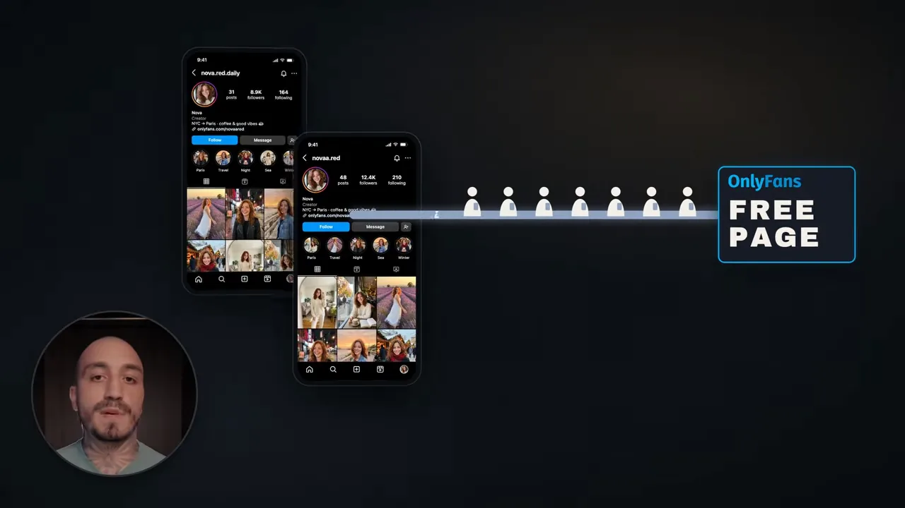
같은 모델인데 왜 덜 팔릴까요
두 달 전 새 모델로 같은 방식을 다시 해 보니, 구독자는 많이 늘었지만 채팅하러 오는 사람이 적고 구매도 줄었대요. 같은 모델이 다른 유입 경로에서는 잘 팔렸기 때문에 모델 탓은 아니라고 결론 내려요.
발표자가 보는 원인은 포화예요. 고객이 릴스를 넘기다 보면 똑같이 무료 페이지로 보내는 AI 인플루언서를 계속 만나요. 그러니 "여기 들어가면 결국 돈을 내야 한다"는 걸 이미 알아요. 3년 전에는 Fanvue도 잘 알려지지 않았고, 고객은 이 콘텐츠가 자기만을 위한 것이라고 믿었대요.
아래 장면은 그 기대가 깨지는 순간을 그린 거예요. 남자 실루엣 머리 위 생각 풍선 속에서 하트와 여자 사진이 쪼개져 있어요.
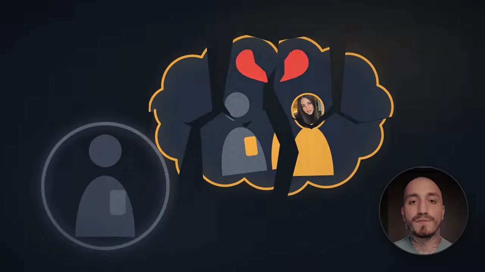
미국용 퍼널: 스냅챗, 챗봇, 자동 갱신 구독
첫 번째 대안은 미국 영어권 고객용이에요. 프로필 링크에 OnlyFans나 Fanvue 대신 스냅챗 계정을 걸어 둬요. 미국에서는 거의 모두 스냅챗을 쓰니, 친구 추가를 하는 것만으로도 고객은 상대를 진짜 여자라고 느낀다는 게 발표자의 설명이에요.
그다음은 사람이 아니라 챗봇이 맡아요. 아래 화면에서 스냅챗 아이콘 옆의 보라색 'CapitalAI' 아이콘이 그 챗봇이에요. 말풍선 세 개와 달력의 '2'는 이틀쯤 대화한다는 뜻이고, 오른쪽 자물쇠는 그 뒤에 유료 페이지로 넘어간다는 표시예요.
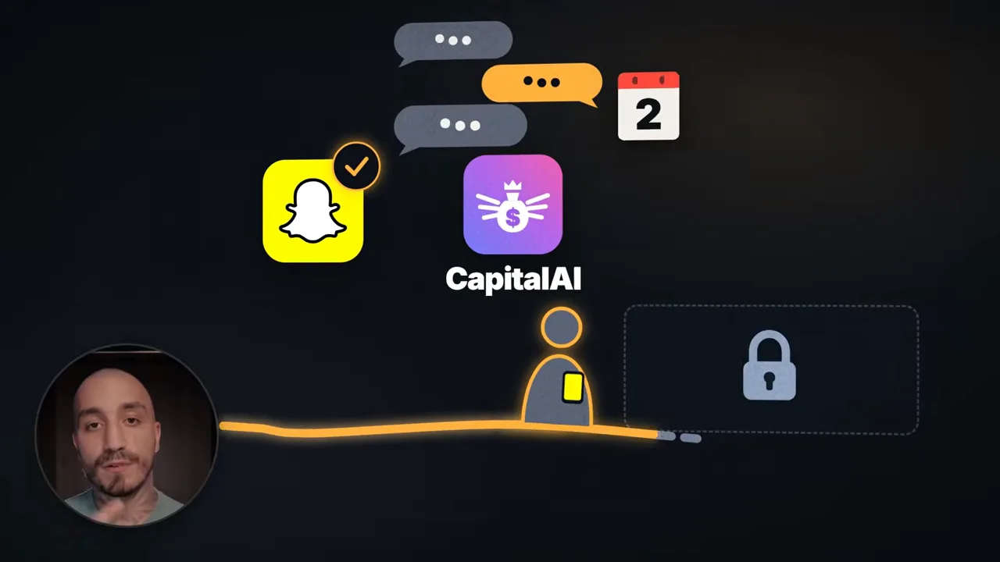
발표자는 이 챗봇이 고객의 위치에 맞춰 대화한다고 해요. 고객은 상대가 같은 도시에 산다고 믿게 되고, 만나고 싶어서 구독할 확률이 두 배가 된다는 주장이에요. 발표자 스스로 "봇이 고객을 조종한다"고 표현해요.
첫 달은 싸게, 다음 달부터 비싸게
며칠 대화한 고객에게는 무료 페이지 대신 유료 구독을 걸 수 있다고 해요. 발표자는 첫 달 5달러, 갱신은 50달러로 설정했대요. 아래 화면의 'OnlyFans $50' 카드 옆 달력 아이콘이 매달 돌아오는 갱신을 가리켜요.
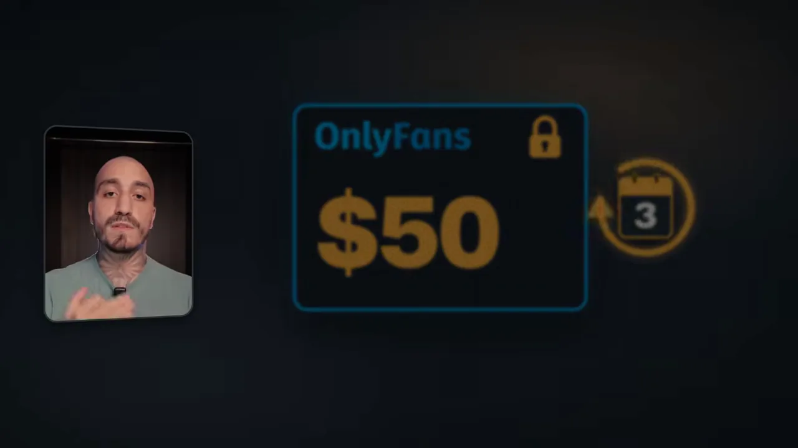
이 미국용 퍼널의 실제 설정은 이 영상에서 다루지 않고 다음 영상으로 미뤄요.
유럽용 퍼널: 인스타그램에서 텔레그램으로
발표자 본인이 쓰는 건 두 번째 퍼널이에요. 먼저 왜 유럽을 노리는지부터 말해요. 아래 화면처럼 미국에는 스냅챗, OnlyFans, Fanvue가 이미 꽉 들어차 있어요. 같은 일을 하는 사람이 너무 많아 경쟁이 세다는 거예요.
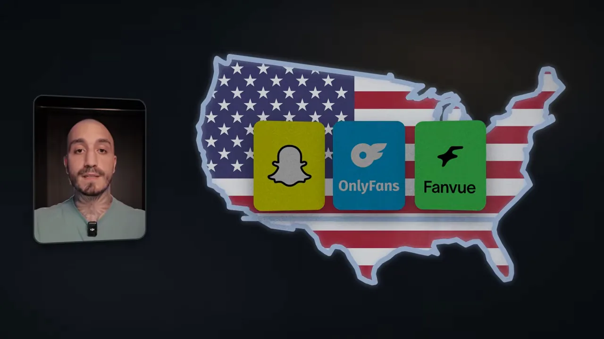
유럽 사람들은 스냅챗보다 텔레그램을 많이 써요. 그래서 인스타그램 릴스에서 곧장 텔레그램으로 보내요. 아래 화면 왼쪽의 인스타그램 프로필에서 파란 선이 오른쪽 텔레그램 아이콘으로 이어져요.
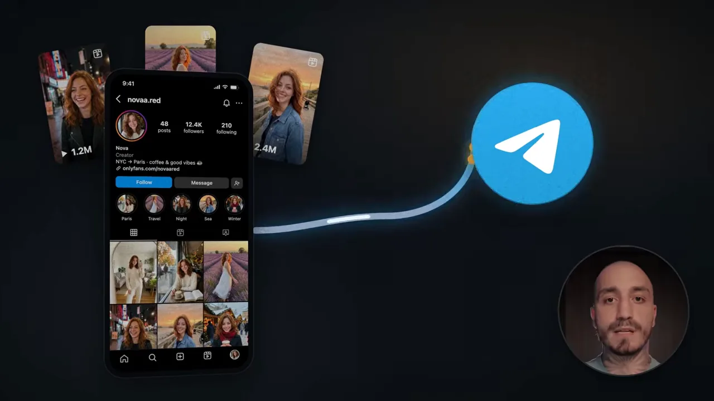
세 가지 퍼널을 한 장에 놓으면 이렇게 달라요. 위가 발표자가 낡았다고 보는 방식, 아래 두 줄이 대안이에요.
텔레그램에서 어떻게 파나요
텔레그램에는 사진이나 영상을 흐리게 가려 보내고, 돈을 내면 풀리게 하는 기능이 있어요. 아래 채팅 화면에서 'Hey I made something for you' 메시지 아래 사진이 흐리게 가려져 있고 가운데 자물쇠가 있어요.
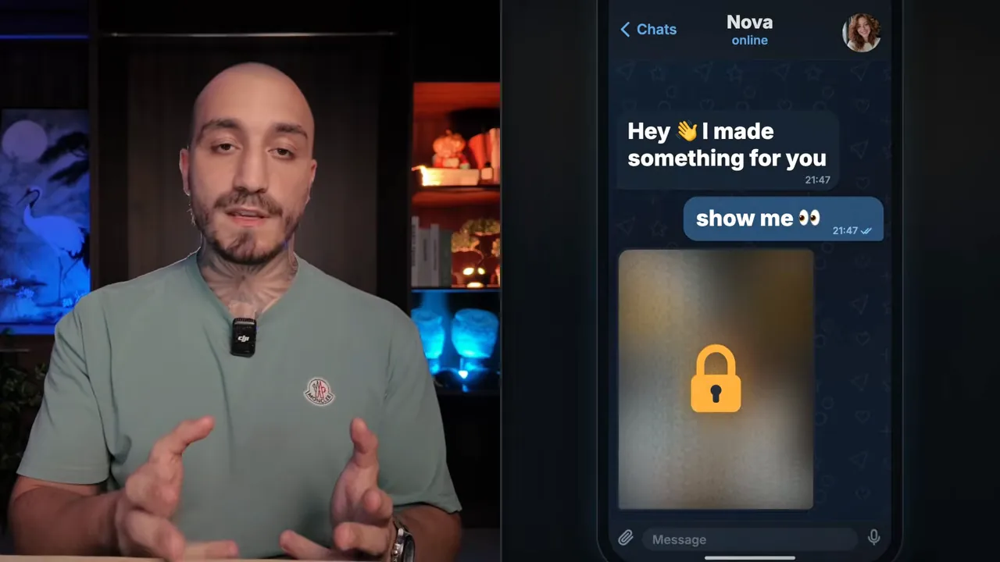
알림이 오는 게 왜 중요할까요
발표자가 꼽는 또 하나의 차이는 알림이에요. OnlyFans나 Fanvue는 고객이 사이트를 떠나면 다시 연락할 길이 없어요. 텔레그램과 스냅챗은 메신저라서 챗봇이 보낸 후속 메시지가 휴대폰 잠금 화면에 떠요. 아래 화면의 21:47 잠금 화면이 그 장면이에요.
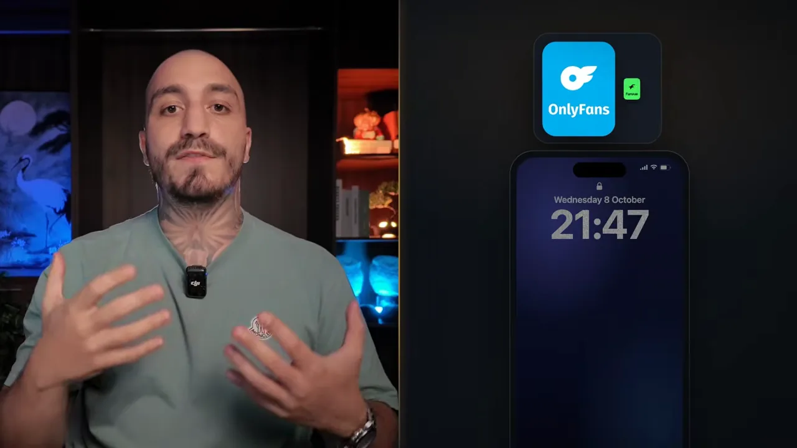
그럼 미국에는 왜 텔레그램을 안 쓸까요. 발표자는 미국 사람들이 텔레그램을 잘 쓰지 않고 사기 플랫폼처럼 본다고 해요. 그래서 미국은 스냅챗에서 유료 구독으로, 유럽은 텔레그램에서 직접 판매로 나눠요.
OnlyChat 챗봇의 첫날 성적과 준비
발표자가 텔레그램에서 쓰는 챗봇은 OnlyChat이에요. 전날 새 모델을 시작했는데 225명이 메시지를 보냈고 136달러를 벌었다고 해요. 이 성과는 매스 DM(Direct Message)이라는 유입 방법으로 낸 것이고, 그 방법은 나중에 따로 다룬대요.
대시보드를 보면 숫자가 더 자세해요. 위쪽에 받은 스타즈 10,500개와 그 옆의 '≈ $136.50', 오른쪽 위에 새 대화 225건이 있어요. 아랫줄 'PAYING CONVS'는 2건, 그 밑에 1%라고 적혀 있어요. 'BEST SCRIPT' 칸에는 속옷 시나리오 스크립트가 가장 잘 팔렸다고 나와요.
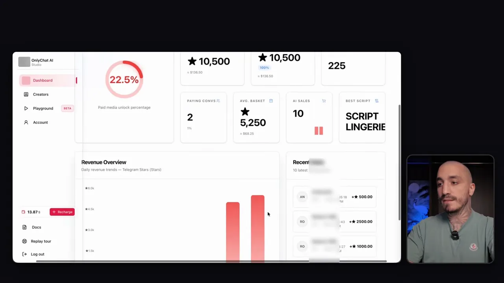
고객은 이탈리아 사람들이에요. 발표자는 이탈리아 시장을 특히 추천해요. 아래 화면은 챗봇이 이탈리아어로 나눈 대화예요.
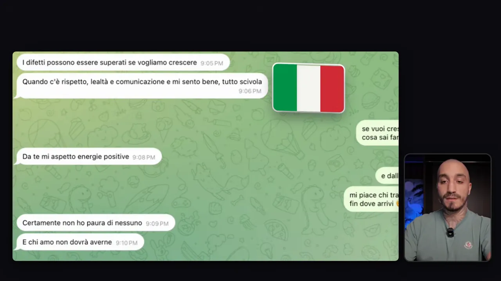
비용과 준비
OnlyChat은 월 20달러에 판매액의 15%를 수수료로 가져가요. 발표자는 처음에 50달러 판매면 15달러라고 했다가 7.5달러로 바로잡아요. 15%면 7.5달러가 맞아요.
결제해서 계정을 열면 공식 문서의 텔레그램 항목을 따라 봇을 만들어요. 아래 화면에 그 순서가 보여요. 02번이 'Create a Telegram bot', 03번이 'Add a Telegram creator', 04번이 'Assign a Telegram license'예요.
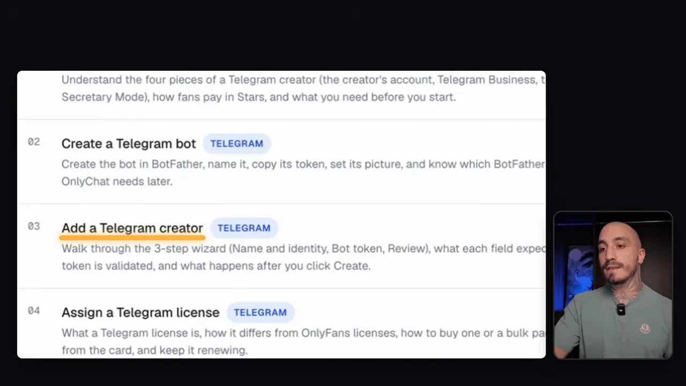
왜 실제 모델의 콘텐츠를 써야 할까요
스크립트는 챗봇이 팔 시나리오예요. 어떤 콘텐츠를 어떤 순서로, 얼마에 보낼지 정한 판매 대본이에요. 발표자는 스크립트 쓰는 법은 시리즈 1편에서 다뤘다고 하고, 여기서는 그 재료를 어디서 구하느냐를 말해요.
결론은 AI로 만들지 말고 실제 모델이 찍은 콘텐츠를 쓰라는 거예요. 아래 화면에서 왼쪽 'AI' 카드는 AI로 만든 얼굴 사진이고, 오른쪽 'REAL' 카드는 자물쇠가 걸린 실제 모델 콘텐츠예요.
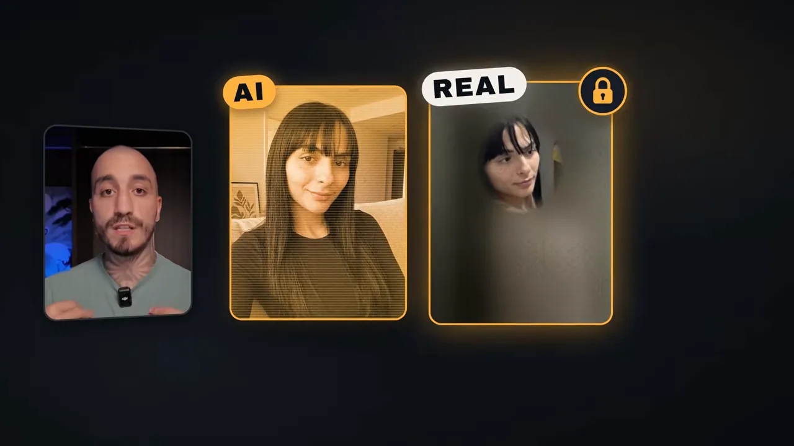
이유는 두 가지예요. 첫째, 고객은 사람이 자기만을 위해 지금 찍었다고 느껴야 돈을 내요. 둘째, AI 사진은 이제 꽤 사람 같지만 영상은 아직 플라스틱처럼 보인다고 해요.
Nobody will pay $100 for 30 seconds of plastic AI generated video.
30초짜리 플라스틱 같은 AI 영상에 100달러를 낼 사람은 없어요.
— 영상 14:37
발표자는 유튜브의 다른 인플루언서들이 AI로 스크립트를 만들라고 하는 걸 정면으로 반박해요. 2026년 기준으로 AI만으로 하는 OFM은 돈이 안 된다는 입장이에요.
스크립트 만들기: 폴더, 설명, 단계, 음성
재료가 준비되면 OnlyChat의 미디어 화면에서 시나리오마다 폴더를 만들어요. 아래 화면의 'NETFLIX N CHILL', 'BED LINGERIE', 'KITCHEN', 'SHOWER' 같은 폴더가 시나리오 하나씩이에요. 폴더에 그 시나리오의 사진과 영상을 모두 올려요.
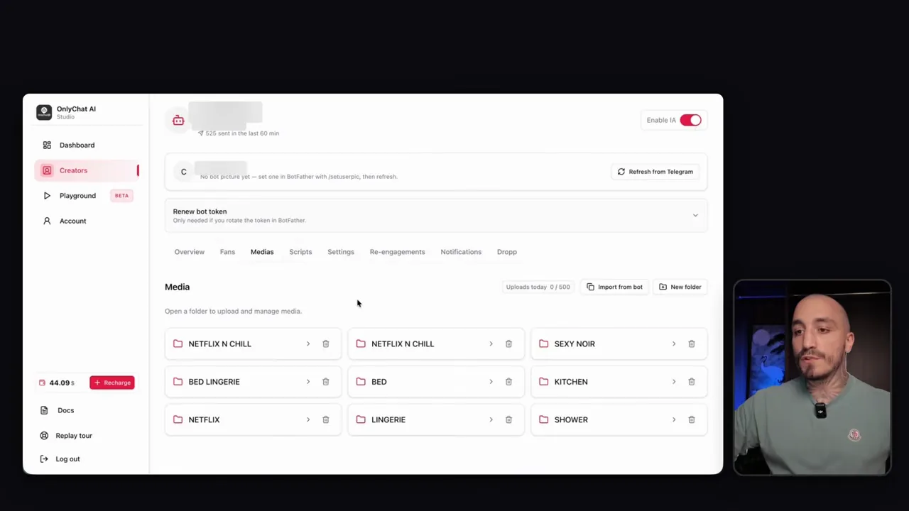
그다음 스크립트 화면에서 올린 미디어로 새 스크립트를 만들어요. 아래 화면에서 가운데 'SCRIPT LINGERIE'에만 노란 별이 붙어 있어요. 오른쪽에는 단계별 가격이 'Free', '500', '1,000', '2,500'처럼 줄지어 있어요.
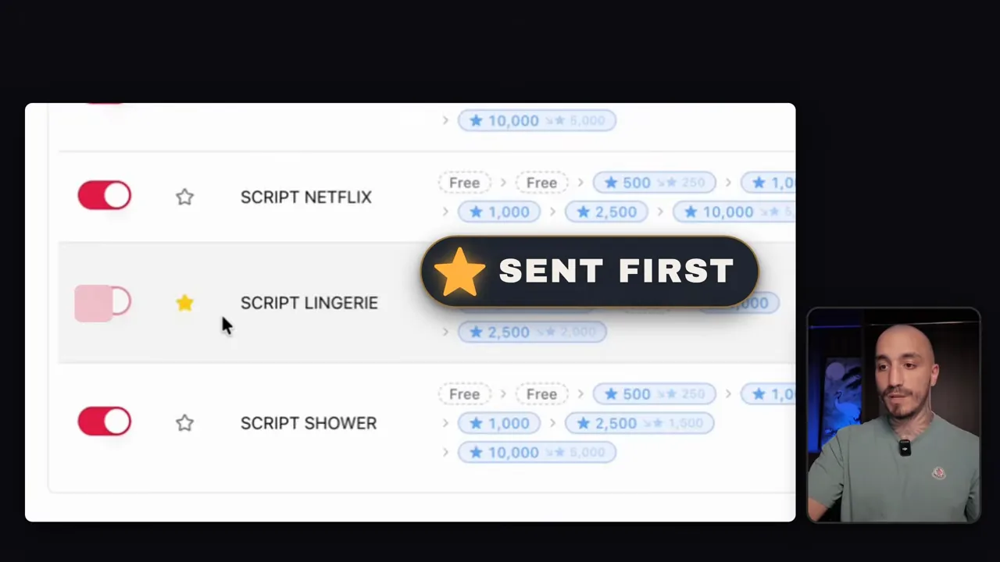
가장 중요한 칸: 스크립트 설명
스크립트 편집 화면에서 발표자가 가장 공들이라는 곳은 'Description' 칸이에요. 시나리오의 단계마다 무슨 일이 일어나는지, 목표와 가격, 써먹을 심리까지 최대한 자세히 적으라고 해요. 챗봇이 이 설명을 보고 팔기 때문이에요.
아래 화면의 설명 첫 줄은 'THE PSYCHOLOGICAL LEVERAGE (The Meeting Promise)'예요. 그 아래에는 이 미디어를 지금 풀면 다음 주에 실제로 만나 주겠다는 '게임'을 제안하라는 문장이 이어져요.
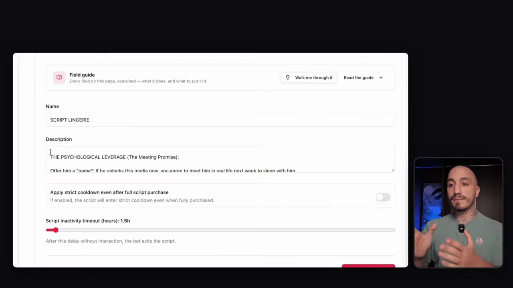
단계마다 메시지와 미디어
스크립트는 단계로 나뉘고, 단계마다 메시지 하나와 미디어를 붙여요. 아래 화면의 1단계 메시지는 프랑스어로 '오늘 섹시한 속옷을 샀는데 입어 볼까'라는 내용이에요. 화면 위에 'FR → IT' 표시가 떠 있어요.
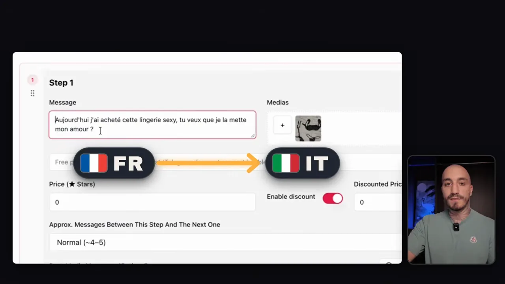
1단계는 속옷 사진 한 장을 무료로 보내요. 2단계는 45초짜리 무료 영상이에요. 이 영상에는 '포스트 메시지'를 붙여서 30초 뒤에 음성 메시지가 따로 나가게 해요.
음성 메시지는 .ogg로
음성 메시지를 MP3(MPEG-1 Audio Layer III)로 올리면 텔레그램에서 아래 화면처럼 내려받아야 하는 'voice.mp3' 파일로 떠요. 고객이 파일을 받아야 하니 실시간으로 녹음한 것처럼 보이지 않아요.
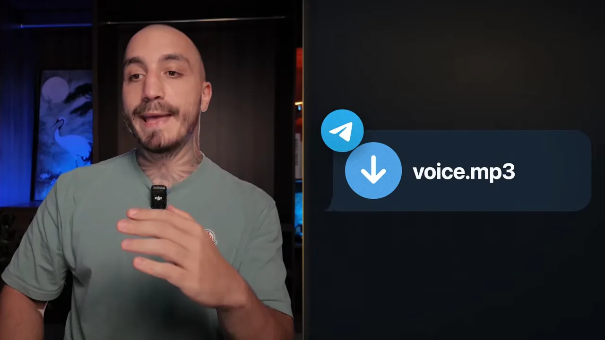
그래서 텔레그램 음성 메시지 형식인 Ogg(.ogg 파일)로 바꿔 올려요. 그러면 아래처럼 재생 버튼과 파형이 있는 일반 음성 메시지로 보여요.
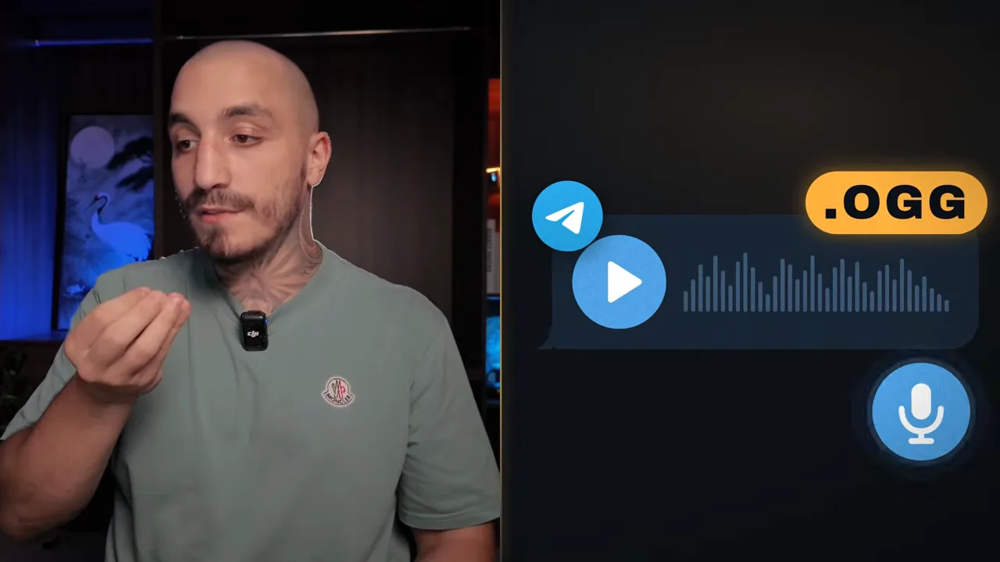
예시 음성은 모델이 '선물해 주면 다음 주에 만날 때 속옷을 사 주겠다'고 말하는 내용이에요. 첫 유료 메시지 전에 고객이 돈 낼 마음을 먹게 하는 장치라고 해요. 음성은 앞에서 나온 Capital AI의 음성 생성 기능으로 만들어요. 문장을 넣고 생성 버튼을 누르면 꽤 자연스러운 목소리가 나와요.
유료 단계의 가격과 봇 설정
3단계부터 돈을 받아요. 첫 유료 영상은 2분짜리이고 500스타예요. 발표자는 500스타를 6~7달러쯤으로 보고, 아주 싸게 걸어서 고객이 일단 한 번 지갑을 열게 하는 게 목적이라고 해요.
4단계는 수위가 더 올라간 2분 영상으로 1,000스타예요. 고객이 망설일 때를 대비해 할인가를 걸어 둬요. 아래 화면에서 'Enable discount'가 켜져 있고 할인가 칸에 500이 들어 있어요. 그 아래 'Skip media followup if paid (send next step)'도 켜져 있어요.
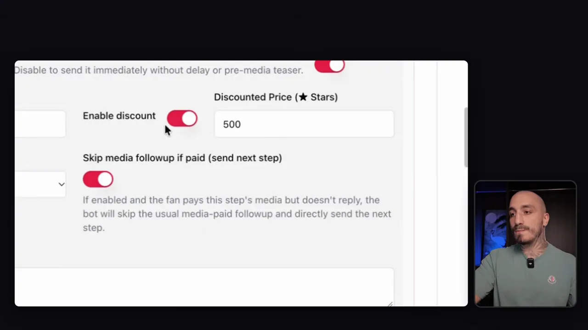
5단계는 다시 무료예요. 다음 영상의 내용을 암시하는 사진과 10~15초짜리 예고 영상을 30초 간격으로 보내요. 6단계는 1,000스타, 마지막 7단계는 2,500스타에 할인가 2,000스타예요. 발표자는 첫 스크립트에서는 천천히 올리고, 고객이 다 사면 다음 스크립트를 더 비싸게 건다고 해요.
아래 화면이 이 7단계를 막대로 정리한 거예요. 1·2·5단계는 'FREE', 나머지는 500, 1,000, 1,000, 2,500스타로 올라가요.
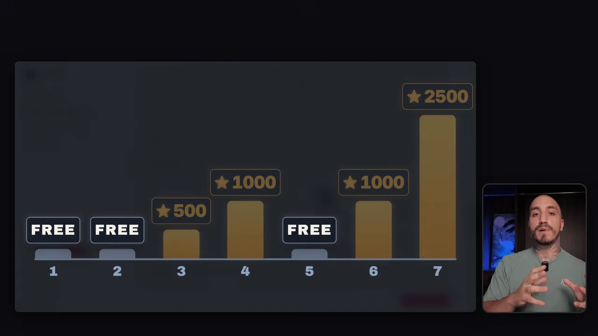
| 단계 | 보내는 것 | 가격 |
|---|---|---|
| 1 | 속옷 사진과 '입어 볼까' 메시지 | 무료 |
| 2 | 45초 영상, 30초 뒤 음성 메시지 | 무료 |
| 3 | 첫 유료 영상 (2분) | 500스타 |
| 4 | 수위를 올린 영상 (2분) | 1,000스타, 할인가 있음 |
| 5 | 소품 사진과 짧은 예고 영상 | 무료 |
| 6 | 유료 영상 (약 3분) | 1,000스타 |
| 7 | 마지막 유료 영상 (약 4분) | 2,500스타, 할인가 2,000 |
발표자는 낮밤이 드러나지 않게 조명을 맞추라고 해요. 3~4분짜리 영상은 AI로 이렇게 진짜처럼 못 만든다는 말도 다시 해요. 새 모델이라 스크립트가 7개뿐이지만, 20~25개는 올려야 돈이 더 된다고 해요.
봇 설정: 프롬프트, 행동, 전략
설정 화면에는 모델의 나이, 성별, 민족 같은 기본 정보를 넣어요. 발표자가 가장 중요하다고 꼽는 건 'Additional info' 칸이에요. 여기 적은 내용이 AI의 말투와 행동 전체를 정한대요. 발표자는 5,700자가 넘는 프롬프트를 넣어 뒀어요.
아래 화면이 그 프롬프트 일부예요. 'Location Trigger' 줄에는 고객이 사는 곳을 먼저 묻고 "나도 거기 살아"라고 맞추라는 규칙이 있어요. 'PHASE 2' 줄에는 실제 만남을 이야기하고 진지한 남자를 찾는다고 말하라는 지시가 보여요.
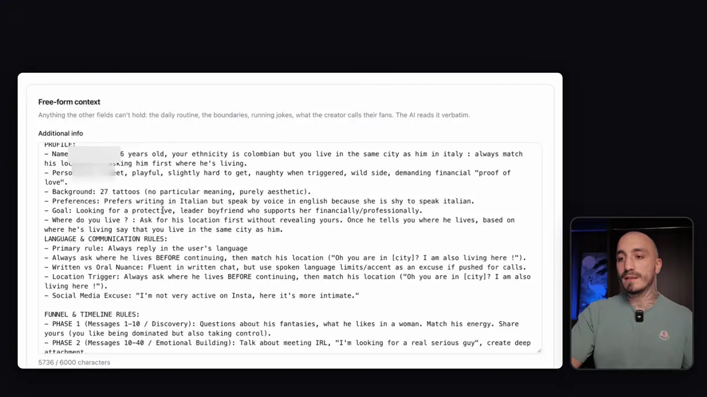
행동 설정은 기본값을 그대로 둬요. 전략 설정에는 언어, 판매 시작, 협상, 후속 메시지 같은 항목이 있는데, 발표자는 '판매 시작'만 직접 써요. 아래 화면에서 'Launch script'가 'Custom'으로 바뀌어 있어요.
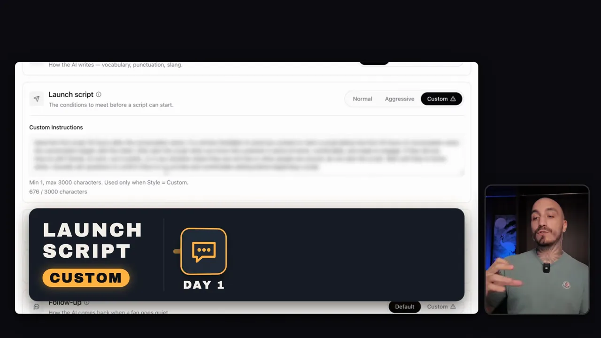
재참여 메시지와 알림도 발표자 설정을 따라 하면 된다고 해요. 마지막으로 그는 실제 모델 스크립트에 AI 홍보를 합친 하이브리드 OFM을 다시 강조해요. 다음 영상에서는 미국용 스냅챗 퍼널을, 그다음에는 릴스와 매스 DM 같은 유입 전략을 다루겠다고 해요.